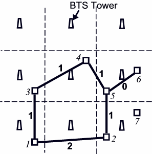

ICPC World Finals 2005 · Problem B
Mobile phones have changed our lifestyle dramatically in the last decade. Mobile phones have a variety of protocols to connect with one another. One of the most popular networks for mobile phones is the GSM (Global System for Mobile Communication) network.
In a typical GSM network, a mobile phone connects with the nearest BTS (Base Transceiver Station). A BSC (Base Station Center) controls several BTSs. Several BSCs are controlled by one MSC (Mobile Services Switching Center), and this MSC maintains a connection with several other MSCs, a PSTN (Public Switched Telecom Network) and an ISDN (Integrated Services Digital Network).
This problem uses a simplified model of the conventional GSM network. Our simplified network is composed of up to fifty BTS towers. When in use, a mobile phone always connects to its nearest BTS tower. The area covered by a single BTS tower is called a cell. When an active mobile phone is in motion, as it crosses cell boundaries it must seamlessly switch from one BTS to another. Given the description of a map consisting of cities, roads and BTS towers, you must determine the minimum number of BTS switches required to go from one city to another.

Each tower and each city location is to be considered as a single point in a two-dimensional Cartesian coordinate system. If there is a road between two cities, assume that the road is a straight line segment connecting these two cities. For example, in the figure, traveling on the road from city 1 to city 2 will cross two cell boundaries and thus requires two switches. Traveling from city 2 to city 5 crosses one cell boundary and traveling from city 5 to city 6 requires no switch. Traveling this route from city 1 to city 6 requires three total switches. Note than any other path from city 1 to city 6 requires more than three switches. If there is more than one possible way to get from one city to another, your program must find the optimal route.
The input file contains several test cases. The first line of each test case contains four integers: B (1 ≤ B ≤ 50), the number of BTS towers; C (1 ≤ C ≤ 50), the number of cities; R (0 ≤ R ≤ 250), the number of roads; and Q (1 ≤ Q ≤ 10), the number of queries. Each of the next B lines contains two floating-point numbers x and y, the Cartesian coordinates of a BTS tower. Each of the next C lines contains two floating-point numbers xi, yi that indicate the Cartesian coordinates of the ith city (1 ≤ i ≤ C). Each of the next R lines contains two integers m and n (1 ≤ m,n ≤ C), which indicate that there is a road between the mth and the nth city. Each of the next Q lines contains two integers s and d (1 ≤ s,d ≤ C), the source and destination cities.
No coordinate will have an absolute value greater than 1000. No two towers will be at the same location. No two cities will be at the same location, and no city will lie on a cell boundary. No road will be coincident with a cell boundary, nor contain a point lying on the boundary of three or more cells.
The input will end with a line containing four zeros.
For each input set, you should produce Q+1 lines of output, as shown below. The first line should contain the number of the test case. Q lines should follow, one for each query, each containing an integer indicating the minimum number of switches required to go from city s to city d. If it is not possible to go from city s to city d, print the line “Impossible” instead.
9 7 6 2 5 5 15 5 25 5 5 15 15 15 25 15 5 25 15 25 25 25 8 2 22 3 8 12 18 18 22 12 28 16 28 8 1 2 1 3 2 5 3 4 4 5 5 6 1 6 1 7 0 0 0 0
Case 1: 3 Impossible